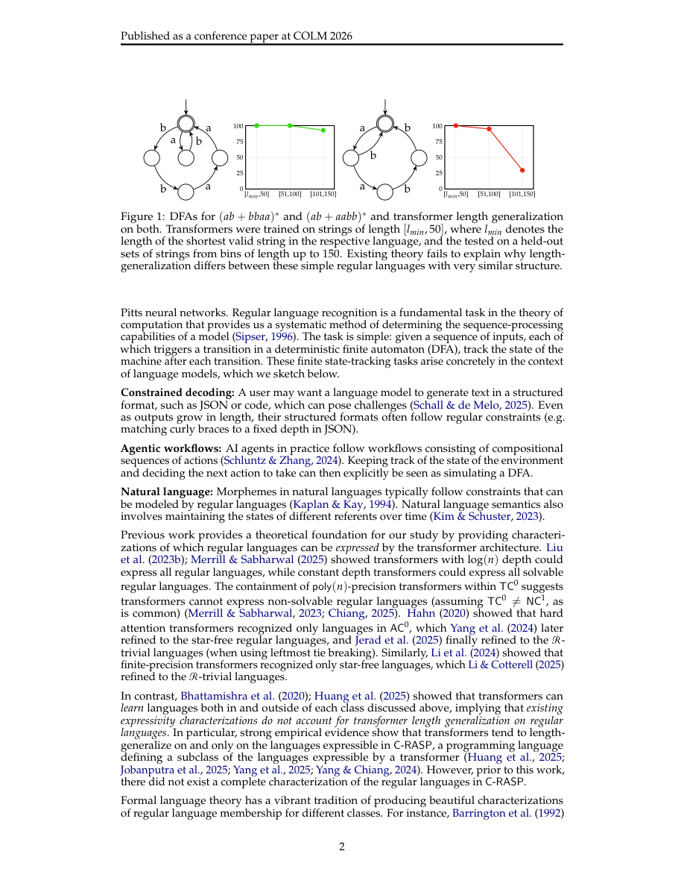

#1
★ 7/10
Algebraic Decomposition Theory for Transformer Length Generalization
Transformer长度泛化的代数分解理论

图 Figure · Page 2 of paper
🎯 首个完整理论，精确预测Transformer能在哪些任务上泛化到更长序列。
First complete theory to predict exactly which tasks transformers can generalize to longer sequences on.
🗣️ 一句话比喻 · Plain-English Analogy就像一位老师想知道学生能不能把学过的乘法口诀"举一反三"用到更大的数字上——这篇论文就是给老师一份精准的说明书：哪类题型学生一定能推广，哪类题型再怎么练也推广不了，而且只需几步就能查清楚。Imagine a student who learned math up to the number 100 — sometimes they can figure out problems with numbers up to 1,000, but sometimes they can't. This paper is like a cheat sheet that tells you, for any type of math rule, whether the student will be able to stretch their knowledge to bigger numbers — before you even test them.
| 维度 | 中文 | English |
|---|---|---|
| ❓ 待解决 的问题 |
像ChatGPT这样的Transformer模型在训练时只见过一定长度的文本，但有时它们能神奇地处理更长的文本，有时却彻底失败。我们无法可靠地预测"长度泛化"什么时候会成功。即使是最简单的一类规则性任务（正则语言），也没有人知道哪些任务Transformer能在更长序列上处理，哪些不能。 | Transformer AI models (like ChatGPT) are trained on text up to a certain length, but sometimes they surprisingly work on much longer text — and sometimes they completely fail. We have no reliable way to predict when this "length generalization" will succeed. Even for the simplest class of rule-based tasks (called regular languages), nobody knew which ones transformers could handle at longer lengths and which ones they couldn't. |
| 💡 解决 的亮点 |
• 首次给出完整的数学刻画，明确指出哪些正则语言任务允许Transformer长度泛化，不再靠猜测。 • 发现经典数学工具（Krohn-Rhodes分解理论）对控制长度泛化的关键属性"视而不见"，因此团队发明了全新的代数框架。 • 提供了一个多项式时间决策算法，可以高效判断任意正则语言任务是否支持Transformer长度泛化。 | • First-ever complete mathematical characterization of which regular language tasks allow transformer length generalization — no guesswork needed anymore. • Discovered that existing classical math tools (Krohn-Rhodes decomposition theory) are blind to the key property that controls length generalization, so the team had to invent a new algebraic framework. • Delivered a practical decision algorithm that runs in polynomial time — meaning you can efficiently check any regular language task to see if a transformer will length-generalize on it. |
| 🧪 实验 内容 |
研究人员在一系列正则语言任务上验证理论——这些是遵循固定规则的模式识别问题（例如"这个字符串中'a'的数量是偶数吗？"）。他们训练Transformer处理短序列，然后测试是否能泛化到更长序列。他们将自己理论的预测与现有分类方法进行比较，看哪种方法更准确地匹配真实Transformer的行为。 | The researchers tested their theory on a broad suite of regular language tasks — specific pattern-recognition problems that follow fixed rules (like "does this string contain an even number of a's?"). They implemented transformers trained on short sequences and tested whether they could generalize to longer ones. They compared their theory's predictions against existing classification approaches to see which one better matched real transformer behavior. |
| 📊 实验 结果 |
论文报告称，在一系列正则语言测试任务上，他们的新代数刻画预测Transformer长度泛化行为的准确性"优于现有分类方法"。摘要中未给出具体数字，但实验证实：理论预测属于C-RASP的任务确实发生了长度泛化，预测不属于C-RASP的任务则没有——在先前方法存在分歧或无法判断的情况下，与实际Transformer行为吻合。 | The paper reports that their new algebraic characterization predicts transformer length-generalization behavior "more accurately than existing classifications" across a broad test suite of regular languages. Specific accuracy numbers are not broken out in the abstract, but the experiments confirm that tasks predicted to be in C-RASP by their theory do length-generalize, while those predicted outside do not — matching empirical transformer behavior in cases where prior methods disagreed or were silent. |
| 🏁 结论 | 本文提供了首个经过严格证明的完整数学理论，能够精确告知哪些规则性任务的Transformer可以成功泛化到更长序列，并通过理论证明和实际实验双重验证。它填补了我们对Transformer能力理论理解的一个根本性空白。 | This paper delivers the first provably complete and efficient mathematical theory that tells you exactly which rule-based tasks transformers will successfully generalize to longer sequences on, backed by both rigorous proofs and real experiments. It fills a fundamental gap in our theoretical understanding of transformer capabilities. |
| 🔗 论文 链接 |
arXiv: 2608.13433v1 · 📥 PDF | |
⚙️ Method · 方法详解
研究人员从一个叫C-RASP的形式框架出发——这个框架已知能捕捉Transformer可以长度泛化的内容。挑战在于精确确定哪些正则语言属于C-RASP。他们发现经典数学工具（Krohn-Rhodes理论）是错误的工具——它的基本构件与C-RASP的基本构件（涉及无界计数）不匹配。于是他们将经典理论从有限结构扩展到无限结构，特别是引入了整数的无限群（…-2,-1,0,1,2…）。利用这套新的"广义分解理论"，他们精确刻画了C-RASP，并推导出一个干净的多项式时间算法，可判断任意正则语言任务是否支持长度泛化。
The researchers started by working with a formal framework called C-RASP, which was already known to capture what transformers can length-generalize on. The challenge was figuring out exactly which regular languages fit inside C-RASP. They found that the classical mathematical toolkit (Krohn-Rhodes theory, which breaks complex structures into simple building blocks) was the wrong tool — its building blocks don't match C-RASP's building blocks (which involve unbounded counting, like keeping track of arbitrarily large numbers). So they extended the classical theory from finite structures to infinite ones, specifically incorporating the infinite group of integers (…-2, -1, 0, 1, 2…). Using this new "generalized decomposition theory," they could precisely characterize C-RASP and derive a clean polynomial-time algorithm to decide if any given regular language task will allow length generalization.
📐 Key Formulas · 关键公式
\[\text{Regular Language } L \in \text{C-RASP} \iff \mathcal{M}(L) \in \mathbf{LG}(\mathbb{Z})\]
💡 正则语言L属于C-RASP（即Transformer可长度泛化），当且仅当其句法幺半群属于由整数加法群通过迭代环积生成的代数类。
A regular language L can be length-generalized by a transformer if and only if its syntactic monoid belongs to the algebraic class generated by iterated wreath products of the integers — the paper's central characterization theorem.
🌟 Why It Matters · 为什么重要
理解AI模型在处理更长输入时何时会失效，对于构建可靠的AI系统至关重要——尤其是法律、医疗和编程领域，文档往往远长于训练数据。这项工作为工程师提供了一个具体、快速的判断依据，可提前预测Transformer是否能在更长序列上处理给定任务，从而避免意外失败。
Understanding when AI models break down on longer inputs is critical for building reliable AI systems — in law, medicine, and coding, where documents can be much longer than training data. This work gives engineers a concrete, fast-running checklist to predict in advance whether a transformer will handle a given task at longer lengths, helping avoid unexpected failures.